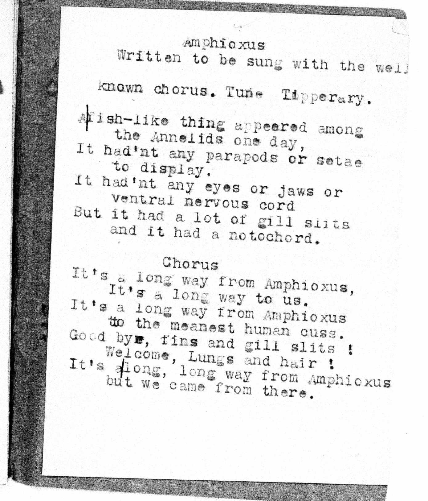
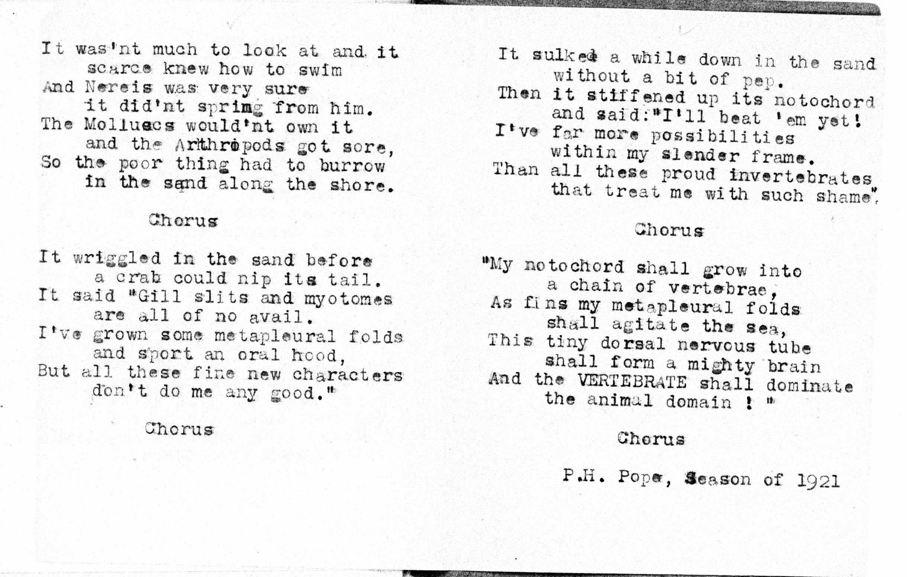

This typewritten copy of The Amphioxus Song was found among old papers of the Pope family. It was a typewritten sheet inserted into a hand-lettered songbook dated at Cold Spring Harbor, 1921, by Philip Pope.
|  |  |
This page prepared by Joe Felsenstein. Thanks particularly to Edith Pope Patten, and Tom and Suki Boydston.